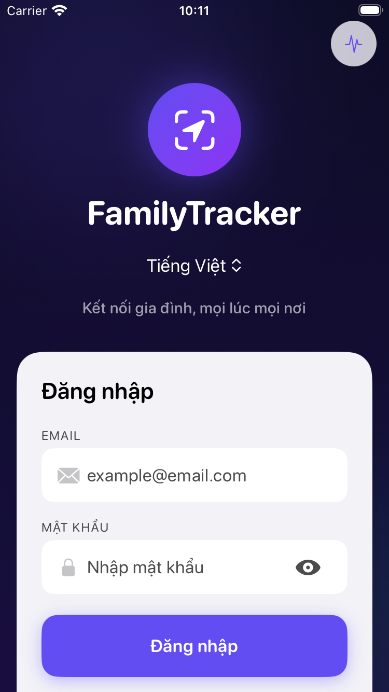
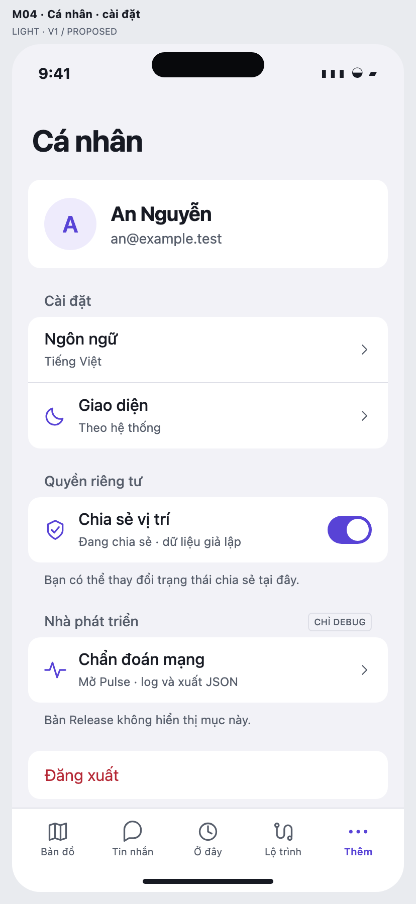

HIỆN TẠI · ảnh Simulator thật

DebugOverlay chèn nút waveform44pt ở top safe area, xuất hiện cả ngoài bản đồ.ĐỀ XUẤT · M04 v1 / PROPOSED

Dùng lại Cá nhân → Nhà phát triển. Giữ Pulse, monitoring, xuất JSON, shortcut và launch flag; Release không có mục này.